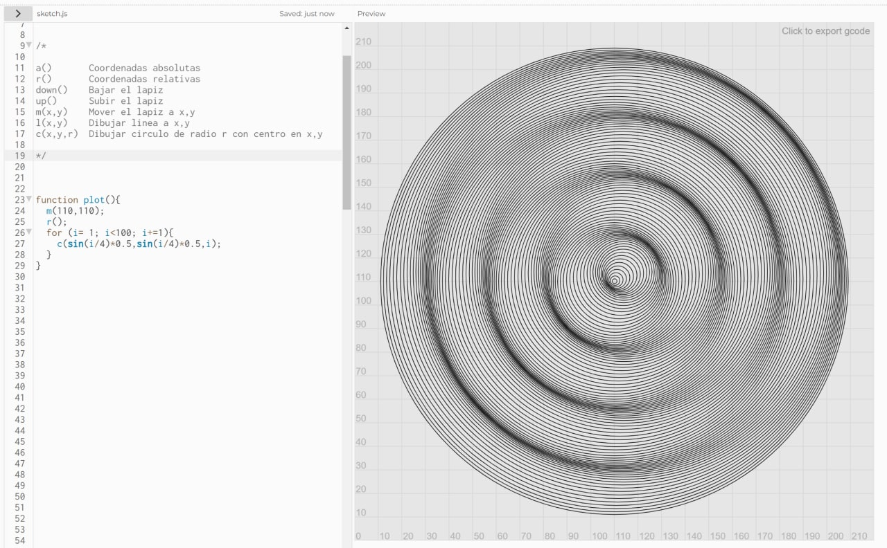
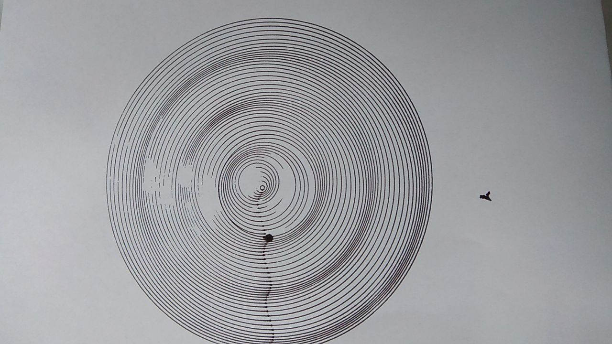

Dec 4, 2023
I made a small library in p5js with simple functions to draw procedural stuff and produce G-code that I can save to a file and use it in my 3D printer to draw stuff using a marker attached to it.
Here's a link to the library. If you press play, the drawing is rendered and the bottom console shows the corresponding G-code.  
The results in paper were not perfect. The printer wasn't properly calibrated, and the nuances of the marker needed a proper handling of how/when to move up and down from the paper and finetuning.
But it was fun! definitively something I had in my to-do list :)